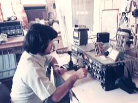
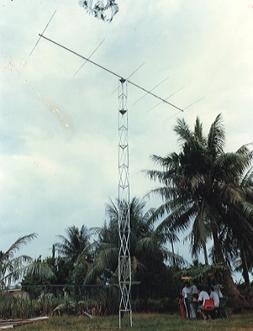
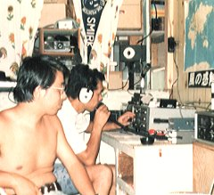

サイパン(KG6R=現KH0)からのKG6ROのDX-Peditionは1978年8月20日～26日に行なわれました。

KG6RO(現・KH0AB) Ryo Okawa
【聞こえないパイルアップ！？】
なぜ、こんなに弱いのだろう?。 たくさんの局が呼んでくれているのに。コールがノイズの中から途切れ途
切れに浮かび上がっては消え、消えては浮かび上がってくる。 コンデションは恐ろしく不安定のようだ。
ようやく浮かび上がったきたコールサインをコピーして、すばやく応答しても、次には相手の信号は聞こえ
ない。 こちらからの呼び出しにも応答がないのだ。
24日も17:00LMT(LMT=時差1時間=日本時間より1時間進んでいる）頃から、定期便の様に入感しだしたJAなのに、
もう10分も経っているのにまだ5局しかQSO出来ていない。
ここ2～3日の様子では、コンデションは1時間ともたないはずだ。
気はあせっても相変わらず弱い信号が50.110MHz付近でうごめいている。
FT-625DのSメーターは針の幅ほども振れていない。
それでも、こちらの“QRZ”に対しては確実に反応が返ってくるのでこちらを呼んでいるのは間違いない。
“受信部がイカレているのではないか？”という不安がフッと頭の中をよぎる。
しかし、この疑問も時々走り過ぎる、車のイグニッション・ノイズが勢い良くSメーターを振らせ吹き飛ばしてくれる。
とにかく、出来るだけ多くの局をコピーしようとヘッドホーンに全神経を集中する。
傍で待機している他のメンバーも、テープレコーダーのモニターから流れる信号を聞き取ろうと聞き耳を立てている。
オープンしたら確実に“どパイル”になるはずのJA1エリアがオープンしているのにログにはいたずらに"One Way"のコピー局が並んでいく。
それでも時間と共に時々フワーッとコンデションが上がって、何局かを集中的にさばくことが出来るようになってきた。
幸い今日はオープンしてから1時間過ぎてもコンデションはほとんど落ちていない。
いまJA1エリアが入感しているという事は、これからJA2→3方面へコンデションが移って行くはずである。
とにかく開いている所から1局でも多くQSOしよう。
予想した通り18:00LMTを過ぎる頃からJA1エリアに混ざってJA2エリアの局が入感し始める。しかし、信号は相変わらず弱い。
JA2エリアからの信号は弱いながら、JA1エリアに比較すると安定している様だ。SSBとCWを使い分けながらQSOを続ける。
聞きなれたコールサインが次々に聞こえてくる。
19:00LMTを過ぎる頃になって、コンデションはJA2→JA1→JA7と激しく動き出してきた。
JA7の局とのQSOは楽だ。ローカルの混信が無いためかほとんど一発で返事が返ってくる。
コンデションはJA2→JA7の間を何度か行き来した後、20:00LMT頃からJA3に移ってきた。
相変わらずコンデションの動きは激しいが、コンデションも若干上がってきた様だ。
ときどきSメーターを勢い良く振らせて入感する局もある。
今度はJA3→JA1までを行ったり来たりの動きとなった。各エリアが入り乱れての入感となってきた。
そろそろコンデションも終わりに近づいた様だ。JA3に混ざってJA4エリアが1局聞こえたが、
それより西へは移らなかった。午後21:30LMT、JA2の局を最後に6mバンドは静まり返ってしまった。
動作を始めた50.110MHzのビーコンの音がただいたずらに周囲の闇に吸い込まれていく。
6mの"ざわめき"は遂に戻っては来なかった。
この24日の4時間にわたるオープンは、今回のPeditionの期間中では最も長時間のオープニングだった。
ただ、時間の割にQSOした局数があまり多くなかったのは信号が弱く不安定だったことによる。
強力に入感するパイルアップなら、さばき様もあっただろうに...。
信号の確認に四苦八苦する"聞こえないパイルアップ"は初めての経験だった。
【運用結果】
SaipanのDX-Pedition最初のオープンは、8月20日15:33LMT(14:33JST)にQSOしたグアム(Guam)のKG6DX。
この後、KG6JIH、KG6JDX、韓国のHL9TG、HL9WIなど外国勢？が続き、JAとのQSOは17:53LMTからのJA6UKYが最初だった。
この日のJAからの信号はJA6エリアが主で、信号も強力でした。あとは4エリアが2、3局含まれるだけ。
8月21日から後半に運用するJA1QIY、JA1RJU、JE1HYRの3人がサイパンに到着。
この日の夕方から本格的な運用が開始されました。
翌日には10mのタワーの上に6エレ八木(Wilson)を上げて、JA方向に固定されました。
6mと平行して、サテライト(AO-7、AO-8)の運用も行なわれ、両衛星でVK、P29、DU、KG6、JAなど延べ24局とQSOに成功。
このDX-Pediでは6mのQSOは200局を越えコンデションの悪い時期の運用にも関わらず予想以上の成果を上げました。
【JA1RJU・小笠原 一夫】

【運用場所のこと】
KG6ROの運用は庭先の大きなヤシの木の下にセットされた"シャック"から。
直射日光を避けるには絶好の木陰となる天然の日傘。
このヤシの木には大きな実がたくさんぶら下がっていて今にも落ちそうな感じ。
もろに頭に当たったら、豚でも"イチコロ"と聞いて、どう見ても豚より弱そうな頭をかかえて後ずさり...。
【スコールのこと】
運用場所は屋外。普段日光に当たる機会の少ないメンバーは、ここぞとばかり上半身ハダカで日光浴。
冷たい物をたて続けに飲んでも、汗はいつのまにか蒸発。 と、みるまに黒い雲が近ずきパラパラ、ザーッとスコール。
オペレーターは全員軒下へ非難。ビーコン発射のリグは“頭”からビニールをかぶってピーピーッ。
【クレージーのこと】
サイパンの夜は満天の星空。天の川もくっきり見えてすばらしい眺め。
ただし、南十字星を探そうなどとまともな事をいうメンバーはついに居なかった。
オペレーターの瞳にはFT-625のデジタル・ディスプレイの50.110MHzが映る。
【海水浴のこと】
ん！！？？ サイパンに海あった？

KG6ROを運用するJA1QIY(左)とJA1RJU(右)
|